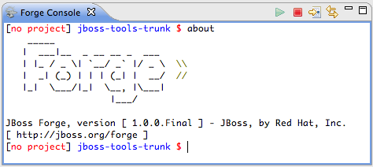
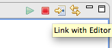
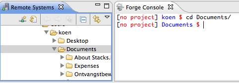
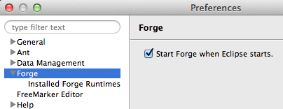

|
| New Embedded Forge Runtime |
The embedded runtime is now Forge 1.0.0.Final!

|
|
| Link with Editor |
The Forge console now contains a toolbar button called 'Link with Editor'. This button, much
like the analogous button on the different explorer windows make sure that the selection of an
open editor cause Forge to 'pick-up' the contents of this editor.

|
|
| Support for the 'cd' command |
Issuing a 'cd' will select the current resources in the open navigator view. If the resource is not
in the workspace and the Remote Systems Explorer View is open, it will be selected in this last view.
This is similar to the behaviour of the 'pick-up' command, except that the resources are not opened in
an editor.

|
|
| Automatic Startup of Forge |
Forge offers now the possibility of an automatic startup at Eclipse startup time. This property
is controlled by a preference with which users can enable/disable the behaviour.

|
|
| 'Usability Improvements' |
A number of improvements have been implemented. Such as there are:
- the 'Show In->Forge Console' functionality offers to start Forge when it is not yet running.
- path issues with 'Show In->Forge Console' on Windows have been tackled.
- the Forge runtime and its console have been decoupled. This allows to close the console while Forge is running. Reopening the console view gets you back where you were.
|
|